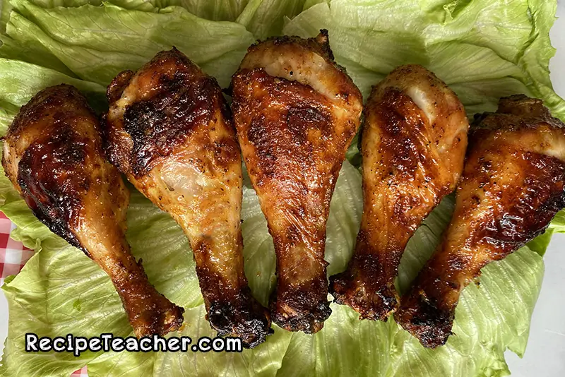

Best Damn Airfryer Chicken Legs

- Ingredients
- Chicken
- Brown Sugar
- Salt
- Pepper
Steps to Cook
- Mix Pepper, Salt and Brown Sugar in Ziplock Bag
- Put Chicken in bag with Seasoning and shake until chicken is completely seasoned
- Place chicken in air fryer at 380 for 20 minutes
- Flip Chicken after 10 Minutes to allow for even cooking
- Enjoy Chicken